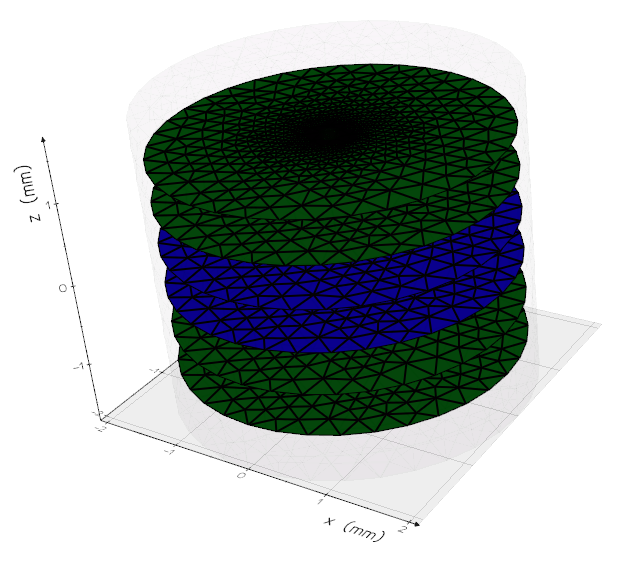
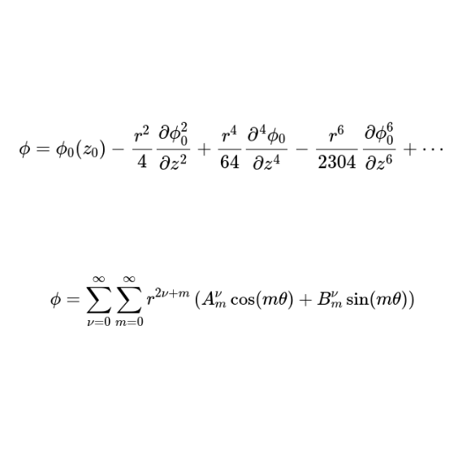

Boundary element method
Unlike traditionel finite element methods Traceon only needs the boundary mesh to compute the fields. This greatly reduces
the problem size and improves accuracy.

Accurate and fast particle tracing
Traceon uses advanced mathematical formulas to make accurate approximations of the fields around the optical axis.
Magnetostatics
Thanks to the method of reduced potential, Traceon also allows magnetostatic fields to be computed.
Convenient Python interface
Traceon is distributed as a package for the programming language you know and love: Python
Verified against the literature
Many benchmark problems from the literature are reproduced in Traceon, showing its excellent accuracy

Free and open source
You can get started with Traceon today!